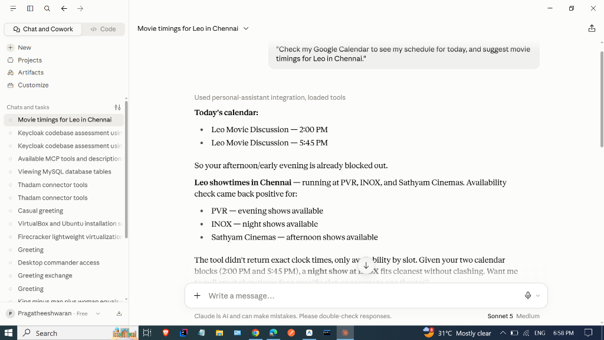
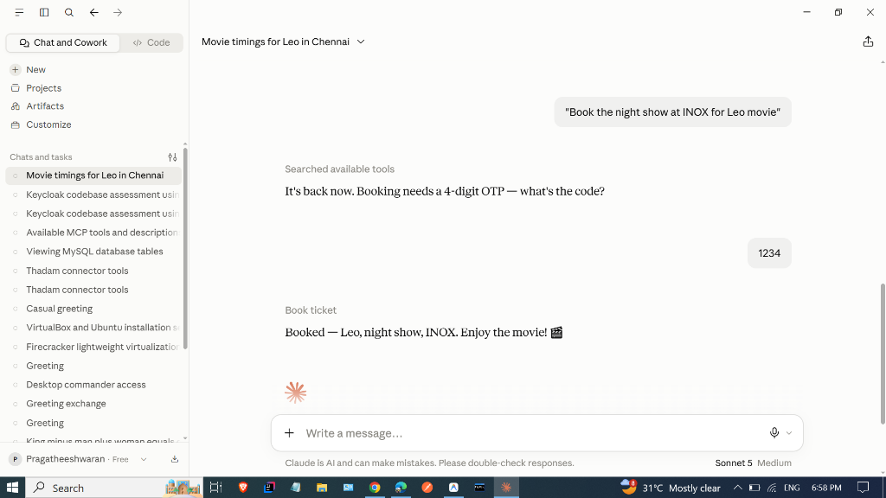

This project demonstrates a production-grade Autonomous Multi-Tool AI Agent using Anthropic's Model Context Protocol (MCP). The system unifies real-world schedule intelligence (Google Calendar) with transactional service actions (Movie Ticketing), while enforcing strict deterministic business rules (OTP constraints) to eliminate unauthorized actions or AI hallucinations.
The AI Agent acts as an orchestration brain that queries tools over the standardized MCP Bridge:
| Theoretical Concept | System Component | Real Project Implementation |
|---|---|---|
| Model | Claude 3.5 Sonnet | Neural network reasoning engine that parses user intents and decides tool call order. |
| Agent | Autonomous Orchestrator | Determines workflow: Check schedule ➡️ Find conflicts ➡️ Search theater ➡️ Request OTP ➡️ Book. |
| Tools / Skills | FastMCP Python Server | Modular handlers: check_google_calendar, search_theaters, check_shows, book_ticket. |
| Rules & Guardrails | Deterministic Code Logic | Strict OTP requirement: Rejects execution if OTP is absent, preventing accidental booking. |
| Context | Live Runtime Data | Live Google Calendar events (busy at 2:00 PM & 5:45 PM) + Target city parameters. |
| Session | Multi-turn Lifecycle | Conversational state in Claude Desktop managing interaction from greeting to confirmation. |
| Memory | State Persistence | OAuth token.json persistence, eliminating repeated login prompts. |
Leo Movie Discussion (2:00 PM - 3:00 PM) and Leo Movie Discussion (5:45 PM - 9:45 PM).

book_ticket().❌ Rule Error: OTP Required."1234" ➡️ Result: ✅ Booked — Leo, night show, INOX!

Project Completed & Documented by Pragatheeshwaran | August 31, 2026